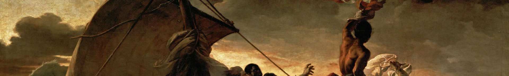
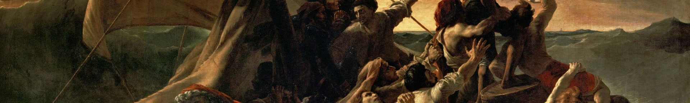
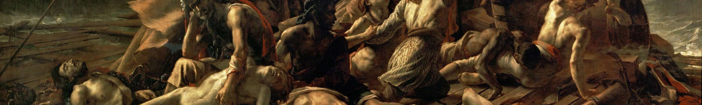
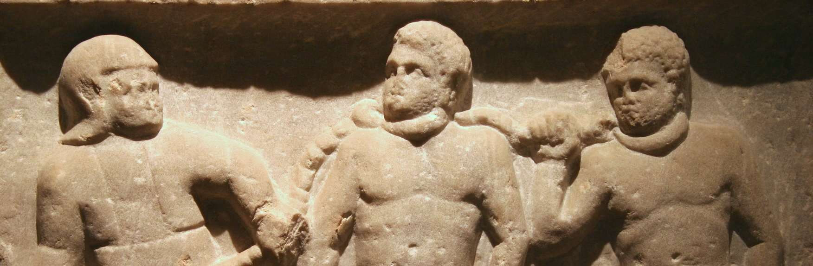
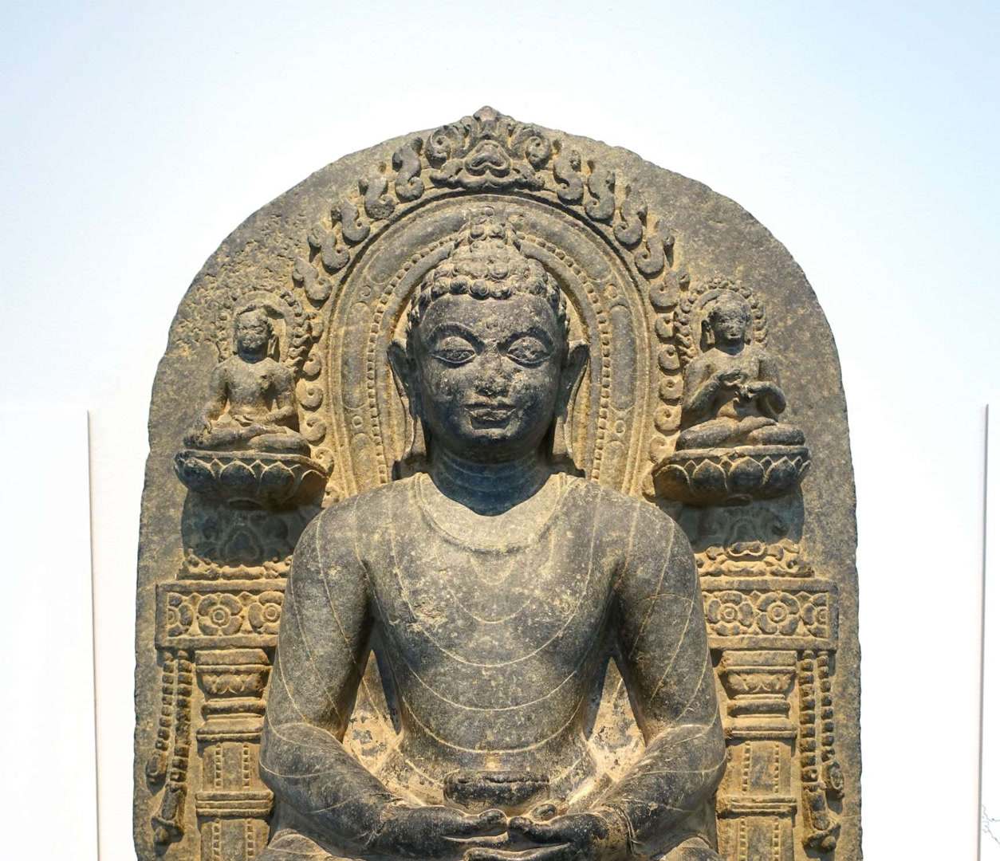
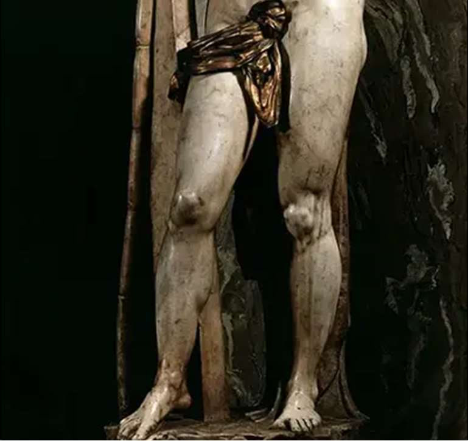
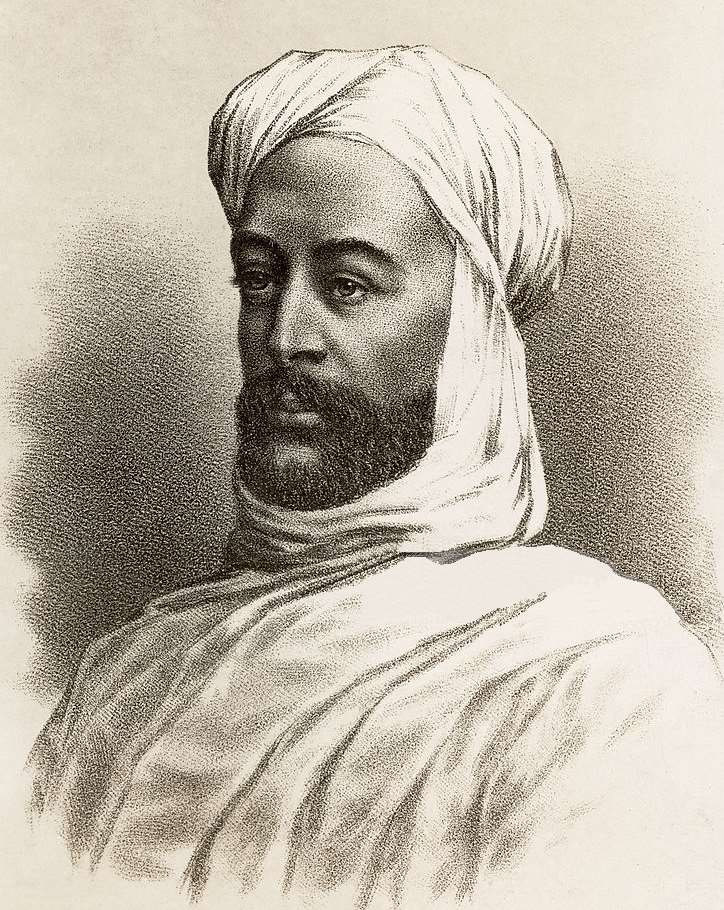
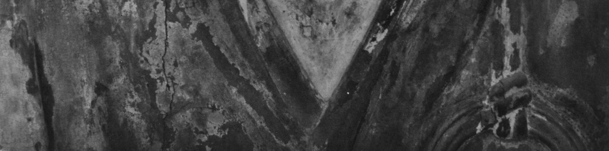
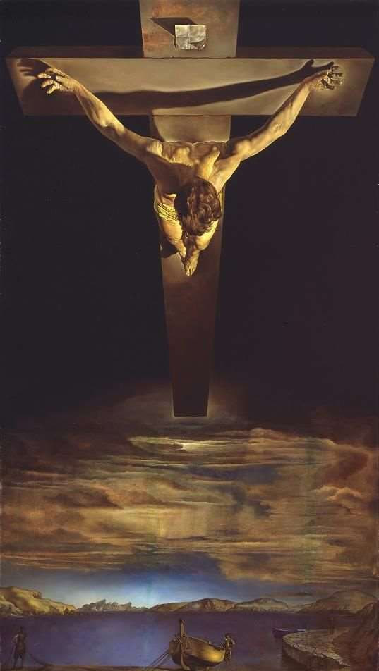
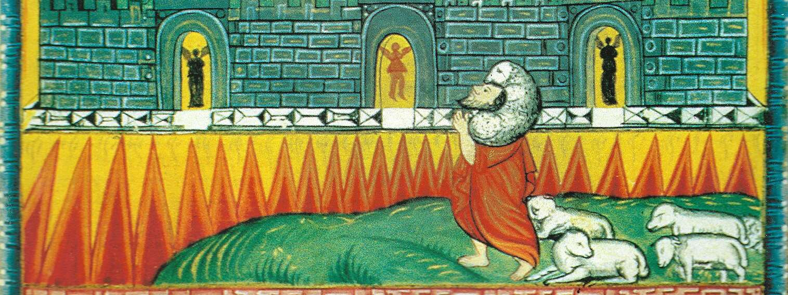

A busca da felicidade. A condição humana de limitação, sofrimento e morte faz ansiar por algum tipo de resgate ou libertação.

Cena de naufrágio, ou A balsa da fragata Medusa, de Jean-Louis Théodore Géricault, ca. 1818-9, Louvre. A condição humana, de limitação, sofrimento e morte, faz ansiar por algum tipo de resgate ou libertação.


A mera experiência de vida já deixa claro que o homem é escravo da sua condição, incapaz de libertar-se por si mesmo. A fraqueza, a ignorância, o sofrimento e a morte o acompanham desde o nascimento.

Escravos romanos com jugo ao pescoço, ca. 200 AD, Esmirna, Ashmolean Museum of Art and Archaeology, Oxford.
Quase todas as religiões abrigam a ideia de que o ser humano precisa ser salvo da sua condição de pecador, que o deixa fraco e sujeito à ignorância, ao sofrimento e à morte.
A mera experiência de vida já deixa claro que o homem é escravo da sua condição, incapaz de libertar-se por si mesmo.
Os panteísmos, notadamente o hinduísta e o budista, consideram que a salvação poderia ser atingida por uma lenta purificação.
A salvação seria atingida por uma lenta purificação, efetuada ao longo de inúmeras encarnações, complementada por uma ascese que levaria a um desapego total da matéria e das ilusões do mundo temporal.
O objetivo final seria chegar ao estado de iluminação, a libertação de todo o desejo e de toda a ligação com o mundo material.

Um macaco oferece mel a Buda Shakyamuni ("iluminado"), dinastia Pala, ca. 1000 d.C., provavelmente de Kurkihar, estado de Bihar, Índia. Museu de Antiguidades do Extremo Oriente, Estocolmo, Suécia.
O Buda medita na posição de "flor de lótus", e não percebe a oferenda porque já atingiu a iluminação que o liberta de todo o desejo.
O Bodhisatva Asanga, também conhecido como Muchaku no Japão, um importante estudioso do budismo Mahayana do séc. IV a.C., que contribuiu para o desenvolvimento da ioga.
Escultura de 1028 d.C., Kofukuji, Museu Nacional de Nara, Japão. Bodhisatvas são seguidores de Buda que, pela ascese e pela meditação, teriam ascendido à iluminação.
Judaísmo e cristianismo enxergam a necessidade de uma intervenção divina na história para libertar o ser humano.
Judaísmo e cristianismo enxergam a necessidade de Redenção, de uma intervenção divina na história que libertaria o ser humano da escravidão ao pecado e o converteria novamente em filho de Deus.
Para os cristãos, o sacrifício voluntário de Cristo na cruz pelos pecados dos homens realizava este papel; complementado pela ressurreição, trazia igualmente a possibilidade de vencer a vulnerabilidade e a morte.
A Redenção, por sua vez, abriria as portas para a santificação, um processo de identificação com Deus em Cristo, efetuado pela ação do Espírito Santo.



Muhammad Ahmad ibn as Sayyid Abd Allah, líder islâmico que se autoproclamou o Mahdi no Sudão em fins do séc. XIX, 1884.
O Mahdi ("o guiado") é uma figura apocalíptica e messiânica no Islã, que apareceria no fim dos tempos para livrar o mundo do mal e da injustiça, pouco antes da vinda de Issa (Jesus) para julgar os vivos e os mortos.

O anjo mostra a São João a Jerusalém celeste que desce do alto, iluminura de Malnazar e Aghap'ir, 1645, man. 1933, fol. 544, Patriarcado Armênio de Jerusalém.
Tanto o judaísmo como o cristianismo afirmam que o estado definitivo do ser humano é o de ressurreição, de uma renovação dos nossos próprios corpos, que viveriam eternamente numa nova criação.
Os próprios "redentores" compartilham da mesma condição de ignorância, fragilidade e decadência moral de que sofrem os seus pretensos redimidos...
A concepção iluminista de um Deus ausente e a "morte de Deus" nietzscheana implicam que o ser humano não teria necessidade de salvação.
A concepção iluminista de um Deus ausente, que não interviria na mecânica do Universo, e mais tarde a noção nietzscheana da "morte de Deus", implicam não existiria pecado e que o ser humano não teria necessidade de salvação.
Todo o mal do mundo seria devido à ignorância, às superstições religiosas, à pobreza, à primitividade dos instintos humanos e à criminalidade que decorreria deles.
A solução para estes males seria o progresso contínuo da racionalidade, graças ao qual as ciências suplantariam a ignorância e a superstição, suprimiriam gradativamente as doenças e a morte, e uma economia mais produtiva aboliria a pobreza e a criminalidade.
Daí o caráter utópico de todas as ideologias progressistas (liberalismo, cientificismo, socialismo, nazismo, comunismo) — a situação ideal está sempre no futuro —, e a violência em que incorrem quando se procura levá-las à prática.

O avanço da razão (The March of Intellect), de Robert Seymour, ca. 1828, British Museum. Uma sátira da crença iluminista no progresso contínuo da racionalidade como solução para todos os males.
Trata-se de uma tentativa de auto-redenção humana, que esquece a observação mais elementar: os próprios "redentores" compartilham da mesma condição de ignorância, fragilidade e decadência moral de que sofrem os seus pretensos redimidos...
A busca da salvação permanece inscrita no coração humano — do naufrágio à redenção, da escravidão à liberdade.
Salvação não é apenas um tema religioso — é a questão de como sair do estado de decadência interior que impede uma vida plena e realizada.
A experiência universal de um estado de afastamento daquilo que seria o ideal da nossa vida — uma força interior que arrasta para a tristeza, a ruindade e a infelicidade.
Salvação tem total vínculo com o sentido da vida. Poder olhar para trás aos 97 anos e dizer: "Valeu a pena viver." Isso importa a todos — religiosos ou não.
Será que você não quer ser feliz? E no entanto constrói, à sua revelia, a própria infelicidade?
A nossa identidade é dada pelos outros. Não somos quem queremos ser — somos aquilo que os outros reconhecem em nós. No caixão, o que dirão de você?
Sócrates, Platão e Aristóteles tentaram resolver o problema do mal e da salvação por vias racionais — cada um a seu modo.
O mal deriva sobretudo da ignorância. Através da educação, conseguiremos eliminá-lo.
Uma ascensão ao divino que purifica e permite viver as virtudes morais — educação dos sentimentos, emoções e paixões.
As virtudes — educação das paixões e instintos — tornam o homem capaz de uma vida de máxima realização.
Panteísmos e monoteísmos oferecem respostas radicalmente diferentes ao problema da salvação.
| Aspecto | Panteísmo (Hinduísmo / Budismo) | Monoteísmo (Judaísmo / Cristianismo / Islã) |
|---|---|---|
| Origem do mal | Contaminação pela matéria — o divino está preso no corpo | Consequência da liberdade humana — o pecado afasta de Deus |
| Método | Purificação gradativa: meditação, ascese, desapego | Intervenção divina: redenção por Deus |
| Papel humano | Eliminar ilusões, praticar a Raja Yoga (yoga dos reis), viver as virtudes | Reeducar a pessoa inteira para exercer bem a liberdade, com ajuda da graça |
| Meta final | Iluminação — libertação de todo desejo e da matéria | Comunhão com Deus — restauração da ordem original |
| Agente | O próprio indivíduo, ao longo de muitas vidas | Deus intervém — o homem sozinho não consegue pagar o preço infinito |
Da "redemptio" romana — a retrocompra do escravo — ao conceito teológico de resgate divino.
Retrocompra: alguém paga o preço para libertar o escravo. O banco era o templo.
Esperava a redenção definitiva. Preparava-se por sacrifícios simbólicos no templo.
A redenção aconteceu em Cristo. Deus se encarnou e pagou o preço infinito dos pecados. Já passamos do estado de pecado ao de filhos de Deus.
Obedeça a Deus com regularidade, cumpra os preceitos — e Deus o reconhecerá como digno e o deixará entrar em Sua companhia.
Sem Deus, a modernidade tentou vários substitutos de redenção — todos insuficientes.
Os iluministas negam o pecado: Deus não quer saber do universo, não existe redenção. "Você faz atos piores e melhores. Fazer o quê? É a vida." Profundamente insatisfatório.
A salvação já não vem de Deus — vem dos outros. Mas os outros não são melhores do que nós. Situação insuficiente.
Livros de autoajuda: eu vou me autorredimir. Mas, por definição, quando preciso de ajuda é para algo que não consigo sozinho. A autoajuda é logicamente absurda.
Alcoólicos Anônimos e grupos similares: reconhecer a fraqueza e buscar ajuda mútua. Funcionou melhor que a autoajuda, mas não resolve os problemas morais de fundo.
A pseudo-redenção pelo ressentimento: a culpa é toda dos outros, eu sou o injustiçado cósmico. Ilusão subjetiva que alimenta o narcisismo, mas é contra toda a realidade e produz total ineficácia.